Abilities
Every unit and commander ability.
Warspire has 65 unit abilities and 33 commander abilities. A unit casts its ability each time its mana fills, and the ability grows stronger with every star. How mana fills and what can stop a cast is on Mana and casting; how abilities pick their targets is on Triggers and targeting.
The last column of each table quotes the short text the game shows for the ability. The real numbers at each star are on the ability's own page.
Many abilities leave a status effect behind. Each one has its own page under Status effects. Damage types are explained on Damage, armour and resistance.
Unit abilities
| Ability | Used by | Mana | Targeting | Does | In-game text | |
|---|---|---|---|---|---|---|
 | Barbed Volley |  Grave Archer Grave Archer | 100 | every enemy in a line from it through its current target, 4 cells long | damage | Looses a barbed arrow through a line of enemies, dealing physical damage to each. |
| Basilisk Glare |  Deep Basilisk Deep Basilisk | 100 | all enemies within 3 cells of itself | damage, disable | Turns all enemies within 3 cells to stone, dealing magical damage and stunning them. | |
| Blade Cyclone | 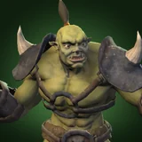 Gate Duelist | 100 | all enemies within 1 cell of itself | damage | Spins into a cyclone of steel, dealing magical damage to adjacent enemies. | |
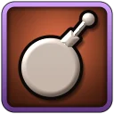 | Blastcap Charge | 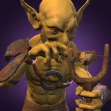 Blastcap Sapper | 100 | its current target and all enemies within 1 cell of it | damage | Lobs a long-fused charge at the target that explodes for heavy magical damage to it and enemies next to it. |
| Blood Frenzy |  Oath Cutter Oath Cutter | 100 | itself | buff | Opens its own veins to fight faster, gaining attack speed and lifesteal for 6 seconds. | |
| Briar Blessing |  Briar Shaper Briar Shaper | 100 | the 2 allies with the lowest share of health left (itself included) | heal, buff | Wraps the two most wounded allies in living bark, healing them and granting bonus armour for 4 seconds. | |
 | Brood Spawn |  Brood Queen Brood Queen | 100 | itself | summon | Lays a clutch of eggs that hatch into hatchlings to fight for you, up to 3 alive at once. |
 | Call Sapling |  Thornwood Seer Thornwood Seer | 80 | itself | summon | Coaxes a thorny sapling out of the ground to fight for you. |
 | Call of the Pack |  Moonless Alpha Moonless Alpha | 100 | itself | summon | Calls for its pack. Dire wolves answer the call. |
 | Call the Great Bear |  Bearclaw Wilder Bearclaw Wilder | 60 | itself | summon | Summons a great spire bear to fight beside it. |
| Cinder Mantle |  Ashen Abbess Ashen Abbess | 100 | itself and all allies within 2 cells | shield | Shields every ally within 2 cells with a mantle of cinders. | |
| Cinder Transfiguration | 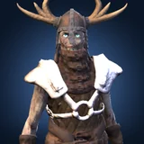 Ashwalker | 80 | itself | buff | Burns into a cinder form for the rest of the combat, gaining attack damage and attack speed. | |
 | Colossal Sweep |  Spire Colossus Spire Colossus | 50 | all enemies within 1 cell of itself | damage | Sweeps its stone fists through all adjacent enemies, dealing pure damage. |
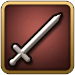 | Crimson Tithe |  Blood Matriarch Blood Matriarch | 100 | the farthest enemy | damage, leap | Leaps behind the farthest enemy and tears into it with physical damage. |
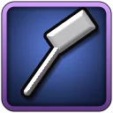 | Crushing Tide |  Drowned Behemoth Drowned Behemoth | 100 | all enemies within 2 cells of itself | damage, disable | Calls up a crushing tide around itself, damaging and stunning all enemies within 2 cells. |
| Death Canticle |  Plague Cantor Plague Cantor | 100 | all enemies within 3 cells of itself | damage | Sings a canticle of death that deals magical damage to all enemies within 3 cells. | |
 | Dread Sentence |  Pit Marshal Pit Marshal | 100 | its current target | damage, disable | Pronounces dread on the target: it is silenced and takes pure damage every second for 10 seconds. |
 | Drowning Wail |  Drowned Wailer Drowned Wailer | 60 | all enemies within 3 cells of itself | damage | Lets out a drowning wail that deals magical damage to all enemies within 3 cells. |
| Ember Vow |  Ashen Pilgrim Ashen Pilgrim | 100 | itself | shield | Wraps itself in smouldering cinders, gaining a damage shield. | |
 | Exemplar's Challenge |  Spire Exemplar Spire Exemplar | 100 | its current target | damage, buff | Strikes the current target with a decisive blow, then fights on with greater fury for 6 seconds. |
 | Flicker Strikes |  Ember Duelist Ember Duelist | 100 | all enemies within 2 cells of itself | damage | Flickers between enemies within 2 cells, striking each for physical damage. |
| Frost Sigil |  Spire Acolyte Spire Acolyte | 100 | its current target | damage, disable | Brands the target with a freezing sigil, dealing magical damage and rooting it in place. | |
 | Gnaw |  Gnawing Wight Gnawing Wight | 75 | itself | buff | Gorges on its foes, gaining lifesteal and attack speed for 6 seconds. |
 | Goring Charge | 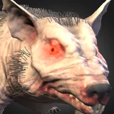 Thornback Boar | 60 | its current target | damage, disable | Gores the target, dealing heavy physical damage and stunning it. |
 | Grave Chain |  Chainwarden Chainwarden | 100 | the farthest enemy | damage, disable | Lashes the farthest enemy with a rusted chain, dealing physical damage and stunning it. |
 | Gravel Volley |  Quillback Quillback | 30 | all enemies within 2 cells of itself | damage | Sprays sharp gravel at all enemies within 2 cells, dealing physical damage. |
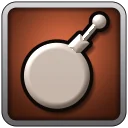 | Grit Blast |  Gargoyle Gunner Gargoyle Gunner | 100 | its current target and all enemies within 1 cell of it | damage, debuff | Fires a spray of stone grit at the target and enemies next to it, dealing physical damage and slowing their attacks. |
 | Hellfire Brand |  Hellblade Reaver Hellblade Reaver | 75 | its current target | damage, disable | Brands the target with hellfire, dealing magical damage and stunning it. |
| Hellrain |  Abyssal Archon Abyssal Archon | 100 | its current target and all enemies within 2 cells of it | damage, debuff | Rains hellfire on the target, dealing magical damage to it and all enemies within 2 cells, then again as the embers fall. | |
 | Hex Jar |  Marsh Hag Marsh Hag | 100 | its current target and all enemies within 1 cell of it | damage, disable | Throws a hexed jar that bursts on the target, damaging and stunning it and enemies next to it. |
 | Hurled Hatchets |  Pack Warden Pack Warden | 100 | every enemy in a line from it through its current target, 4 cells long | damage, debuff | Throws a pair of hatchets through a line of enemies, dealing physical damage and making them take 20% more damage for 8 seconds. (one figure is given; the real values change with the star) |
| Jade Breath |  Jade Drakeling Jade Drakeling | 100 | every enemy in a line from it through its current target, 3 cells long | damage | Breathes a cone of jade flame in a line, dealing magical damage to every enemy in it. | |
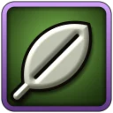 | Leeching Roots |  Rootwarden Rootwarden | 100 | its current target and all enemies within 1 cell of it | damage, disable | Binds the target and enemies next to it in leeching roots that hold them still and drain their health. |
 | Long Shot |  Spire Marksman Spire Marksman | 100 | the farthest enemy | damage | Takes careful aim at the farthest enemy and fires a devastating shot. |
| Mire Draught |  Bog Hexer Bog Hexer | 100 | the 2 / 2 / 3 allies with the lowest share of health left (itself included) | heal | Splashes a restorative brew over the most wounded allies, healing them. | |
| Mire Frenzy |  Mire King Mire King | 100 | itself | buff | Works itself into a frenzy, gaining a large amount of attack speed for 8 seconds. | |
 | Mire Wards |  Fen Mystic Fen Mystic | 70 | itself | summon | Plants venomous bog wards that spit at nearby enemies, up to 3 at once. |
 | Null Hymn |  Hollow Singer Hollow Singer | 100 | its current target and all enemies within 1 cell of it | damage, debuff | Opens a pocket of nothing around the target that deals pure damage over time to it and enemies next to it. |
 | Null Step |  Hollow Strider Hollow Strider | 100 | the farthest enemy | damage, debuff, leap | Steps out of reality behind the farthest enemy, dealing magical damage around it and shredding armour. |
| Phase Lunge |  Riftlance Duelist Riftlance Duelist | 100 | the farthest enemy | damage, leap | Steps through the rift behind the farthest enemy and strikes it with physical damage. | |
 | Pitch Flask | Mire Skirmisher | 40 | its current target and all enemies within 1 cell of it | damage | Hurls a flask of burning pitch, dealing magical damage over time to the target and enemies next to it. |
| Prism Veil |  Veiled Seer Veiled Seer | 100 | itself | shield, buff | Draws a prismatic veil around itself, gaining a damage shield and bonus attack damage for 6 seconds. | |
 | Purging Light |  Grey Confessor Grey Confessor | 60 | the 2 / 2 / 3 allies with the lowest share of health left (itself included) | heal, cleanse | Bathes the most wounded allies in purging light, healing them and removing their debuffs. |
| Raise Bramble Golem |  Thorn Caller Thorn Caller | 80 | itself | summon | Raises a bramble golem from the roots of the spire to fight for you. | |
| Rallying Banner |  Banner Squire Banner Squire | 100 | itself and all allies within 1 cell | buff | Plants the spire’s banner, granting itself and adjacent allies bonus damage and armour for 8 seconds. | |
| Reaping Dirge |  Soul Reaper Soul Reaper | 100 | all enemies within 4 cells of itself | damage, debuff | Unleashes the souls it has reaped, dealing magical damage to all enemies within 4 cells and weakening their damage for 4 seconds. | |
 | Ricochet Glaive |  Night Sentinel Night Sentinel | 100 | its current target and all enemies within 2 cells of it | damage | Hurls a glaive that strikes the target and every enemy within 2 cells of it. |
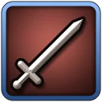 | Riptide Spring |  Tidal Stalker Tidal Stalker | 75 | the farthest enemy | damage, disable, leap | Springs behind the farthest enemy, dealing physical damage and disarming it. |
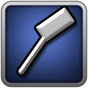 | Rivet Burst |  Gutter Scavenger Gutter Scavenger | 100 | all enemies within 1 cell of itself | damage, disable | Detonates a pouch of rivets, dealing magical damage to adjacent enemies and briefly stunning them. |
| Seeker Rockets |  Clockwork Savant Clockwork Savant | 100 | the 2 / 3 / 4 enemies with the lowest share of health left | damage | Launches a salvo of seeking rockets at the most wounded enemies. | |
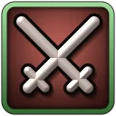 | Shrapnel Ring |  Cog Sapper Cog Sapper | 100 | all enemies within 1 cell of itself | damage | Spins up a ring of shrapnel that shreds adjacent enemies with magical damage over 5 seconds. |
 | Skitter Lunge |  Hive Skulker Hive Skulker | 75 | the farthest enemy | damage, leap | Scuttles to the farthest enemy and bites it, dealing physical damage and leaving a festering wound. |
| Skyfall Arrow |  Skyfall Archer Skyfall Archer | 70 | every enemy in a line from it through its current target, 6 cells long | damage, disable | Fires a falling-star arrow through a line of enemies, dealing magical damage and stunning them. | |
 | Soul Harvest |  Soul Tyrant Soul Tyrant | 100 | all enemies within 3 cells of itself | damage, disable | Rips at the souls of all enemies within 3 cells, dealing magical damage and silencing them. |
| Soul Scour |  Pit Imp Pit Imp | 100 | its current target | damage, debuff | Scours the target’s soul, dealing magical damage and crippling its speed for 5 seconds. | |
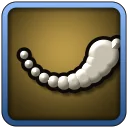 | Spawn Mites | 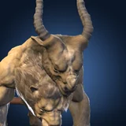 Cinder Hatchmother | 100 | itself | summon | Hatches a clutch of cinder mites that swarm the nearest enemies, up to 3 alive at once. |
| Static Bloom |  Rift Mote Rift Mote | 100 | all enemies within 2 cells of itself | damage | Releases a crackling bloom of rift energy that damages all enemies within 2 cells. | |
 | Stilled Hour | Hourblade | 100 | its current target and all enemies within 2 cells of it | disable | Freezes time around the target, stunning it and all enemies within 2 cells. |
 | Thunderhead Squall |  Storm Augur Storm Augur | 100 | its current target and all enemies within 2 cells of it | damage, disable | Calls a thunderhead over the target that silences and shocks it and enemies within 2 cells. |
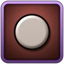 | Titan’s Resolve |  Duskguard Duskguard | 80 | itself | buff | Steels itself for the rest of the combat, gaining bonus damage. |
| Umbral Dance |  Duskmother Duskmother | 100 | itself | buff | Dances through the shadows, becoming almost impossible to hit and striking faster for 5 seconds. | |
| Undertow |  Drowned Pikeman Drowned Pikeman | 75 | its current target | damage, debuff | Drags the target under, dealing physical damage and stripping its armour for 10 seconds. | |
 | War Chant |  Oathkeeper Thane Oathkeeper Thane | 75 | itself and all allies within 1 cell | buff | Bellows a blood oath, granting itself and adjacent allies attack speed for 10 seconds. |
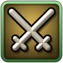 | Whirling Saws |  Saw Rigger Saw Rigger | 100 | all enemies within 2 cells of itself | damage | Whirls its saw-blades, dealing pure damage to all enemies within 2 cells. |
 | Wyrmfire Gout |  Cinder Wyrmrider Cinder Wyrmrider | 50 | every enemy in a line from it through its current target, 3 cells long | damage, debuff | Spews wyrmfire in a line, dealing magical damage and weakening the damage of everything it burns. |
Commander abilities
Commanders do not use mana. Their abilities are passive or come back on a cooldown, and talents can grant new ones or replace one with a stronger version. See How commanders work.
An active ability lands for the first time once its first delay and its cast point have passed. The cooldown starts again only when the cast point ends, so the time from one cast to the next is the cooldown plus the cast point. The cooldown keeps running while the commander is stunned. The times in the Cast column are the earliest possible: a cast still waits until the commander is free to act and has an enemy it can target.
 Vey the Pactbinder
Vey the Pactbinder
| Ability | Cast | Comes from | In-game text |
|---|---|---|---|
 Pact Retinue Pact Retinue | Passive | From the start | Vey never fights with her own hands. At the start of combat she calls her retinue, a Pact Archer and a Pact Bruiser, to fight beside her, and she regenerates 20 health per second. |
 Blood Offering Blood Offering | First at 4.4 seconds, then every 8.4 seconds (cooldown 8 seconds, cast point 0.4 seconds) | Build: Thrall Binder, Golem Caller | Vey spends 5% of her maximum health to heal every ally at once and grant them health regeneration and attack damage for 6 seconds. |
 Thrall Mark Thrall Mark | First at 10.4 seconds, then every 10.4 seconds (cooldown 10 seconds, cast point 0.4 seconds) | Build: Thrall Binder | Vey marks the weakest enemy for 6 seconds. The marked enemy loses 10 armour and takes 20% more damage from every source. |
 Pit Golem Pit Golem | First at 15.7 seconds, then every 15.7 seconds (cooldown 15 seconds, cast point 0.7 seconds) | Build: Golem Caller | Vey calls a Pit Golem to her side. Its arrival stuns every enemy within 2 cells of her target for 2 seconds. |
| Deep Offering | First at 4.4 seconds, then every 8.4 seconds (cooldown 8 seconds, cast point 0.4 seconds) | Talent: Deep Offering, replaces Blood Offering | Vey spends 5% of her maximum health to heal every ally for 50% more and grant them health regeneration and attack damage for 8 seconds. |
| Searing Torment | First at 4.4 seconds, then every 8.4 seconds (cooldown 8 seconds, cast point 0.4 seconds) | Talent: Searing Torment | Vey curses a random enemy, dealing pure damage every second for 7 seconds. |
| Binding Mark | First at 10.4 seconds, then every 10.4 seconds (cooldown 10 seconds, cast point 0.4 seconds) | Talent: Binding Mark, replaces Thrall Mark | Vey marks the weakest enemy for 9 seconds. The marked enemy loses 15 armour and takes 30% more damage from every source. |
 Pit Colossus Pit Colossus | First at 15.7 seconds, then every 15.7 seconds (cooldown 15 seconds, cast point 0.7 seconds) | Talent: Pit Colossus, replaces Pit Golem | Vey calls a stronger Pit Golem to her side. Its arrival stuns every enemy within 2 cells of her target for 3 seconds. |
 Brugg Ironjaw
Brugg Ironjaw
| Ability | Cast | Comes from | In-game text |
|---|---|---|---|
 Crowd Brawler Crowd Brawler | Passive | From the start | Brugg loves a crowd: he gains 5 armour for every unit next to him, friend or foe, and regenerates health. |
 Shrug It Off Shrug It Off | First at 6.5 seconds, then every 11.5 seconds (cooldown 10 seconds, cast point 1.5 seconds) | Build: Barrel Roller, Innkeeper | Brugg cracks his knuckles and wades in: for 5 seconds he takes 50% less damage, attacks much faster and heals for half the damage he deals. |
 Barrel Barrage Barrel Barrage | First at 12.5 seconds, then every 12.5 seconds (cooldown 12 seconds, cast point 0.5 seconds) | Build: Barrel Roller | Brugg rolls barrels across the board. Three enemies take physical damage and take 20% more damage for the rest of the combat; three allies gain 50 attack speed for 5 seconds. |
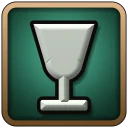 Last Round | First at 10 seconds, then every 10 seconds | Build: Innkeeper | Brugg buys the whole crew a drink. For 5 seconds every ally shrugs off part of the damage it takes. |
 Unbreakable Unbreakable | First at 6.5 seconds, then every 11.5 seconds (cooldown 10 seconds, cast point 1.5 seconds) | Talent: Unbreakable, replaces Shrug It Off | Brugg wades in: for 7 seconds he takes 50% less damage, attacks much faster and heals for half the damage he deals. |
 Haymaker Haymaker | First at 9 seconds, then every 16.5 seconds (cooldown 15 seconds, cast point 1.5 seconds) | Talent: Haymaker | Brugg winds up and punches his target, dealing heavy physical damage and stunning it for 1.5 seconds. |
| Barrel Avalanche | First at 12.5 seconds, then every 12.5 seconds (cooldown 12 seconds, cast point 0.5 seconds) | Talent: Barrel Avalanche, replaces Barrel Barrage | Brugg rolls more barrels across the board. Five enemies take physical damage and take 20% more damage for the rest of the combat; five allies gain 50 attack speed for 5 seconds. |
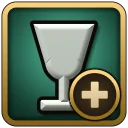 Open Bar | First at 10 seconds, then every 10 seconds | Talent: Open Bar, replaces Last Round | Brugg buys the whole crew a round. For 7 seconds every ally shrugs off a large part of the damage it takes. |
 Pip Quickfingers
Pip Quickfingers
| Ability | Cast | Comes from | In-game text |
|---|---|---|---|
 Smoke and Mirrors Smoke and Mirrors | Passive | From the start | The first time Pip drops below half health he vanishes in a puff of smoke: he sheds his debuffs, cannot be targeted for 1.5 seconds and stuns adjacent enemies for 1.5 seconds. |
 Toxic Twirl Toxic Twirl | First at 1.6 seconds, then every 3.1 seconds (cooldown 3 seconds, cast point 0.1 seconds) | Build: Pickpocket, Brawler | Pip spins and flicks poisoned darts at several enemies within 3 cells, dealing physical damage and adding a stack of toxin to each. Pip heals for each dart. |
 Pickpocket Pickpocket | Passive | Build: Pickpocket | At the start of combat Pip robs a random enemy, which deals 20% less damage and attacks 20 slower, while Pip gains the same. Every enemy Pip kills drops more loot: +15 attack damage and +10 attack speed. |
 Free-for-All Free-for-All | First at 10.1 seconds, then every 10.1 seconds (cooldown 10 seconds, cast point 0.1 seconds) | Build: Brawler | Pip ropes every enemy into a brawl: each takes physical damage, three stacks of toxin and a 1.5 second stun. |
 Venom Cyclone Venom Cyclone | First at 1.6 seconds, then every 3.1 seconds (cooldown 3 seconds, cast point 0.1 seconds) | Talent: Venom Cyclone, replaces Toxic Twirl | Pip spins and flicks potent darts at several enemies within 3 cells, dealing 50% more physical damage and adding two stacks of toxin to each. Pip heals for each dart. |
 Smoke Bomb Smoke Bomb | First at 4.2 seconds, then every 8.2 seconds (cooldown 8 seconds, cast point 0.2 seconds) | Talent: Smoke Bomb | Pip drops a smoke bomb: adjacent enemies are stunned for 1 second and Pip cannot be targeted for 1 second. |
 Grand Heist Grand Heist | Passive | Talent: Grand Heist, replaces Pickpocket | At the start of combat Pip robs two random enemies, which deal 25% less damage and attack 25 slower, while Pip gains 40% damage and 40 attack speed. Kills drop even more loot. |
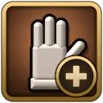 Grand Melee | First at 10.1 seconds, then every 10.1 seconds (cooldown 10 seconds, cast point 0.1 seconds) | Talent: Grand Melee, replaces Free-for-All | Pip ropes every enemy into a wild brawl: each takes 50% more physical damage, three stacks of toxin and a 2.5 second stun. |
 Fizzwick Emberhorn
Fizzwick Emberhorn
| Ability | Cast | Comes from | In-game text |
|---|---|---|---|
| Kindling | Passive | From the start | Every enemy Fizzwick attacks is set on fire for 3 seconds, taking magical damage every second. He also regenerates 10 health per second. |
 Kaboom Bolt Kaboom Bolt | First at 7 seconds, then every 13 seconds (cooldown 12 seconds, cast point 1 second) | Build: Bombardier, Firestarter | Fizzwick hurls a fireball at his target. It bursts on the target and every enemy within 1 cell, splitting its magical damage evenly among them and setting them all on fire for 5 seconds. |
 Bomb Brigade Bomb Brigade | First at 13.25 seconds, then every 13.25 seconds (cooldown 13 seconds, cast point 0.25 seconds) | Build: Bombardier | Fizzwick's goblin pals lob eight bombs onto random cells of the board. Each bomb deals magical damage to every enemy within 1 cell of where it lands and sets them on fire for 5 seconds. |
 Wild Abandon Wild Abandon | First at 12.3 seconds, then every 12.3 seconds (cooldown 10 seconds, cast point 2.3 seconds) | Build: Firestarter | Fizzwick whips the crew into a frenzy: every ally gains attack speed for the rest of the combat, and Fizzwick's attacks reach the whole board. |
 Mega Kaboom Mega Kaboom | First at 7 seconds, then every 13 seconds (cooldown 12 seconds, cast point 1 second) | Talent: Mega Kaboom, replaces Kaboom Bolt | Fizzwick hurls a much bigger fireball at his target. It bursts on the target and every enemy within 1 cell, splitting its greater magical damage evenly among them and setting them all on fire for 5 seconds. |
| Overcharge | First at 5.35 seconds, then every 9.35 seconds (cooldown 8 seconds, cast point 1.35 seconds) | Talent: Overcharge | Fizzwick overcharges a random ally, which gains a large burst of attack speed for 5 seconds. |
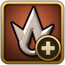 Wildfire | Passive | Talent: Wildfire, replaces Kindling | Every enemy Fizzwick attacks is set on fire for 6 seconds, taking magical damage every second. He also regenerates 10 health per second. |
 Carpet of Bombs Carpet of Bombs | First at 13.25 seconds, then every 13.25 seconds (cooldown 13 seconds, cast point 0.25 seconds) | Talent: Carpet of Bombs, replaces Bomb Brigade | Fizzwick's goblin pals lob twelve bombs onto random cells of the board. Each bomb deals magical damage to every enemy within 1 cell of where it lands and sets them on fire for 5 seconds. |
 Total Chaos Total Chaos | First at 12.3 seconds, then every 12.3 seconds (cooldown 10 seconds, cast point 2.3 seconds) | Talent: Total Chaos, replaces Wild Abandon | Fizzwick whips the crew into a wild frenzy: every ally gains even more attack speed for the rest of the combat, and Fizzwick's attacks reach the whole board. |